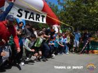

/ Proiecte WeCare / Sprijin pentru Voluntari
/ Proiecte WeCare / Sprijin pentru Voluntari

Membrii Asociatiei Tabere cu Suflet participa activ, ca Voluntari, la evenimente organizate de alte entitati:
 |
||||
| Semimaratonul Bucuresti | Campionii Sanatatii | Actiuni de Ecologizare |
| Legea Voluntariatului | Aplica |
O parte importanta a proiectului WeCare Sprijin pentru Voluntariat o reprezinta sprijinirea Voluntarilor de la TeamXpert Sports Events si de la alte asociatii partenere!
Sprijinul pentru Voluntari consta in:
- Sprijin financiar pentru Voluntarii fara venituri;
- Angajarea temporara ca facilitatori;
- Sustinerea pentru deschiderea unei afaceri in domeniul de activitate al Asociatiei (ex: organizarea de activitati pentru copii, ture velo, competitii, construirea de parcuri de aventura);
- Diseminarea informatiilor in vederea angajarii;
- Cursuri de initiere si perfectionare (ex: curs schi, alpinism);
- Sustinere cheltuieli de participare si Invitatii la competitii si evenimente organizate de terti;
- Gratuitate la programele Weekend Activ, competitii, excursii, programe educationale etc.
De acest program au beneficiat toti voluntarii care au cerut ajutorul si care sunt implicati activ, fara a astepta o recompensa materiala, in proiecte de voluntariat, indiferent ca apartin Asociatiei Tabere cu Suflet, TeamXpert Sports Events sau altei Organizatii.
Cine ne sponsorizeaza? În afara persoanelor care doneaza sume de bani sau se implica voluntar, nu suntem sponsorizati de nimeni.
Vreti sa contribuiti? Puteti sa o faceti prin donatii in contul Asociatiei Tabere Cu Suflet, prin Paypal sau prin directionarea a 2% din venit. Vezi lista Donori
Va multumim! Fiecare gest conteaza!